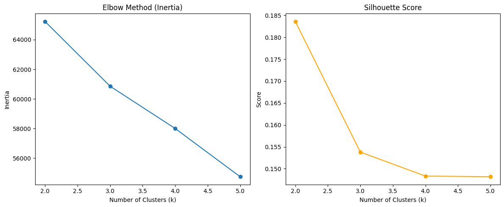

Key Findings
1 Skills radar chart
2 Skill Evaluation
2.1 Marco’s Skills Evaluation
This radar chart illustrates Marco’s self-assessed proficiency across a broad range of analyst-related skills. Overall, he demonstrates strong capabilities in communication, problem solving, detail orientation, leadership, and research, each rated at level 4, highlighting excellent readiness for collaborative work, analytical thinking, and stakeholder engagement.
Marco shows moderate competence in management, Microsoft Excel, data visualization, and presentations, with scores around level 3, indicating a solid foundation in core business skills and common data workflows.
On the technical side, his proficiency in Python, SQL, Tableau, Power BI, statistics, and data management mostly falls between levels 2 and 3, suggesting basic familiarity with these critical tools. Developing deeper technical expertise through targeted training, certifications, or applied project work would help strengthen his profile for data-intensive roles.
In summary, Marco combines strong soft skills, high logical thinking, and business-focused capabilities. If technical skills were further developed, he would be especially well suited for roles that emphasize stakeholder engagement, problem solving, and translating data insights into strategic recommendations.
2.1.1 Millie’s Skills Evaluation
This radar chart illustrates Millie’s self-assessed proficiency across a range of analyst-related skills. Overall, she demonstrates strong capabilities in communication, management, and Microsoft Excel, each rated at 4, indicating solid workplace readiness and strong collaboration skills.
Millie also shows competence in areas like data management, data visualization, problem solving, and leadership, with scores generally around 3, suggesting she has a solid foundation in analytical thinking and business-related soft skills.
On the technical side, her proficiency in tools such as SQL, Python, Tableau, Power BI, and statistics ranges between 2 and 3, reflecting basic familiarity with room for growth. These skills can be strengthened through hands-on project work or further technical training.
In summary, Millie is a promising early-career analyst with strong soft skills and business tool proficiency, and she is actively developing her technical analytics skillset. She would thrive in roles that bridge communication and data, with clear potential to grow into a well-rounded data analyst.
2.1.1.1 Summary
Based on the skill assessment results, Marco and Millie are able to clearly identify their strengths and areas for improvement. This evaluation provides a valuable foundation for them to take targeted actions—whether by enhancing technical skills through training or leveraging existing strengths in communication and management to further optimize their capabilities and better align with their career goals.
3 Kmeans clustering for NAICS2_NAME skills (for Analyst position)


This figure reveals how different skill groups correspond to analyst positions. This insight helps align training, hiring, and upskilling strategies with industry-specific needs.
Cluter 0 - Management, Data, Business, Analytics Positions in this group tend to emphasize management and business logic skills. Positions may focus on data-driven decision making, project coordination, and report analysis. People with logical thinking and business sensitivity have a competitive advantage in this group.
Cluster 1 — Administrative and Office Support Skills (Microsoft, Data, Management, Excel, PowerPoint) This group clearly prefers office practical skills and tool operation capabilities. This type of position has lower technical requirements and places more emphasis on detail processing and internal communication skills.
Cluster 2 — Hybrid Skill Group (Data, Management, Language, Programming, Business) This is a group with obvious cross-skills, integrating data analysis, management, language communication and basic programming skills. Language skills and diverse backgrounds are particularly important in this group, suitable for people with communication skills + elementary programming + business perception.
Cluster 3 — Technology-oriented group This group is obviously highly technical, covering core skills (such as Programming, Python, and SQL.) These positions usually require strong programming and logic skills and suitable for computer, statistics, engineering backgrounds or those who have completed technical transformation training.
4 Random Forest
(Marco’s content)